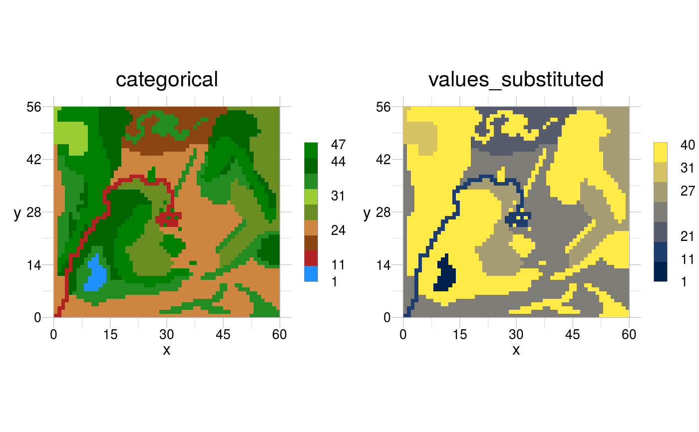

Landscape metrics typically quantify spatial patterns of 2D lattices, such as maps of landscapes, artificial (spatial) patterns or even photographs.
measure(input, with, simplify = TRUE)
| input | [ |
|---|---|
| with | [ |
| simplify | [ |
depending on the employed metric, but typically a data.frame.
A landscape metric can be generic or derived. In the first case the
metric is a list that includes the operator name and its arguments.
In the latter case these generic metrics are considered as terms,
while the derived metric is given as its mathematical equation, where the
terms are related to each other. You can find the equations for landscape
metrics in the vignette with vignette("landscape_metrics", package =
"rasterTools")
The following operators for generic metrics are defined:
mAdjacency: Determine the adjacency matrix of a raster.
mArea: Calculate the area of objects in a raster.
mNumber: Count the number of objects in a raster.
mPerimeter: Calculate the length of the boundary of objects
in a raster.
mValues: Summarise the values of objects in a
raster.
input <- rtData$categorial # calculate generic metrics 'area per class' and 'area per window', 'obj' does # not need to be specified per operator in the algorithm, as 'measure' assigns it. myMetrics <- list(a_c = list(operator = "mArea", scale = "class"), a_w = list(operator = "mArea", scale = "window")) (measure(input = input, with = myMetrics))#> $a_c #> class result #> 1 1 37 #> 2 11 104 #> 3 21 281 #> 4 24 507 #> 5 27 466 #> 6 31 407 #> 7 41 561 #> 8 44 453 #> 9 47 544 #> #> $a_w #> window result #> 1 1 3360 #># calculate 'class proportional area' and 'larges patch index' # 1) define the terms (generic metrics) that are needed to compute the metrics # 2) define the equations that are used based on these terms myMetrics <- list(a_p = list(operator = "mArea", scale = "patch"), a_c = list(operator = "mArea", scale = "class"), a_w = list(operator = "mArea", scale = "window"), mCPA = "a_c / a_w * 100", mLPI = "max(a_p) / a_w * 100") (measure(input = input, with = myMetrics, simplify = FALSE))#> $a_p #> class patch result #> 1 1 1 37 #> 2 11 1 104 #> 3 21 1 209 #> 4 21 2 72 #> 5 24 1 296 #> 6 24 2 173 #> 7 24 3 38 #> 8 27 1 293 #> 9 27 2 173 #> 10 31 1 259 #> 11 31 2 108 #> 12 31 3 40 #> 13 41 1 41 #> 14 41 2 59 #> 15 41 3 82 #> 16 41 4 16 #> 17 41 5 48 #> 18 41 6 2 #> 19 41 7 1 #> 20 41 8 18 #> 21 41 9 1 #> 22 41 10 1 #> 23 41 11 136 #> 24 41 12 62 #> 25 41 13 94 #> 26 44 1 38 #> 27 44 2 16 #> 28 44 3 1 #> 29 44 4 96 #> 30 44 5 1 #> 31 44 6 2 #> 32 44 7 5 #> 33 44 8 163 #> 34 44 9 99 #> 35 44 10 2 #> 36 44 11 12 #> 37 44 12 2 #> 38 44 13 10 #> 39 44 14 6 #> 40 47 1 124 #> 41 47 2 2 #> 42 47 3 136 #> 43 47 4 27 #> 44 47 5 1 #> 45 47 6 1 #> 46 47 7 1 #> 47 47 8 1 #> 48 47 9 1 #> 49 47 10 1 #> 50 47 11 1 #> 51 47 12 7 #> 52 47 13 241 #> #> $a_c #> class result #> 1 1 37 #> 2 11 104 #> 3 21 281 #> 4 24 507 #> 5 27 466 #> 6 31 407 #> 7 41 561 #> 8 44 453 #> 9 47 544 #> #> $a_w #> window result #> 1 1 3360 #> #> $mCPA #> [1] 1.10 3.10 8.36 15.09 13.87 12.11 16.70 13.48 16.19 #> #> $mLPI #> [1] 8.81 #># however, in the above example patches are derived per class, which might # not make sense ecologically, or be at best arbitrary. Instead we might # want to treat all forest, irrespective of deciduous or coniferous as one # patch. substituted <- rSubstitute(input, old = c(41:47), new = 40) visualise(raster::stack(input, substituted))(measure(input = substituted, with = myMetrics))#> [[1]] #> class mCPA #> 1 1 1.10 #> 2 11 3.10 #> 3 21 8.36 #> 4 24 15.09 #> 5 27 13.87 #> 6 31 12.11 #> 7 40 46.37 #> #> [[2]] #> window mLPI #> 1 1 15.71 #># set of spatial operations that enables more complex metrics # derive 'Disjunct Cores Density', which is a rather complex metric